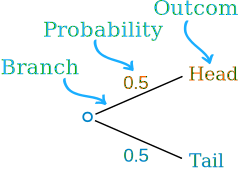
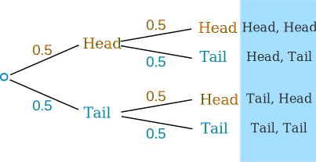
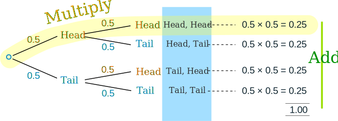
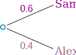
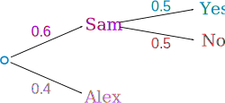
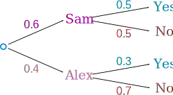
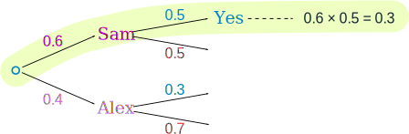
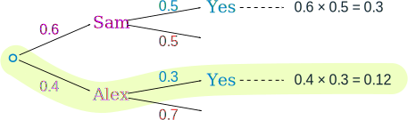
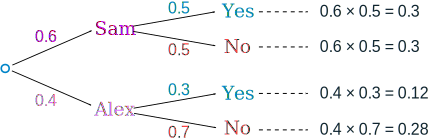

Probability Tree Diagrams
Calculating probabilities can be hard, sometimes we add them, sometimes we multiply them, and often it is hard to figure out what to do ... tree diagrams to the rescue!
Here is a tree diagram for the toss of a coin:
|  | There are two "branches" (Heads and Tails)
|
We can extend the tree diagram to two tosses of a coin:

How do we calculate the overall probabilities?
- We multiply probabilities along the branches
- We add probabilities down columns

Now we can see such things as:
- The probability of "Head, Head" is 0.5×0.5 = 0.25
- All probabilities add to 1.0 (which is always a good check)
- The probability of getting at least one Head from two tosses is 0.25+0.25+0.25 = 0.75
- ... and more
That was a simple example using independent events (each toss of a coin is independent of the previous toss), but tree diagrams are really wonderful for figuring out dependent events (where an event depends on what happens in the previous event) like this example:
Example: Soccer Game
You are off to soccer, and love being the Goalkeeper, but that depends who is the Coach today:
- with Coach Sam the probability of being Goalkeeper is 0.5
- with Coach Alex the probability of being Goalkeeper is 0.3
Sam is Coach more often ... about 6 out of every 10 games (a probability of 0.6).
So, what is the probability you will be a Goalkeeper today?
Let's build the tree diagram. First we show the two possible coaches: Sam or Alex:

The probability of getting Sam is 0.6, so the probability of Alex must be 0.4 (together the probability is 1)
Now, if you get Sam, there is 0.5 probability of being Goalie (and 0.5 of not being Goalie):

If you get Alex, there is 0.3 probability of being Goalie (and 0.7 not):

The tree diagram is complete, now let's calculate the overall probabilities. This is done by multiplying each probability along the "branches" of the tree.
Here is how to do it for the "Sam, Yes" branch:

(When we take the 0.6 chance of Sam being coach and include the 0.5 chance that Sam will let you be Goalkeeper we end up with an 0.3 chance.)
But we are not done yet! We haven't included Alex as Coach:

An 0.4 chance of Alex as Coach, followed by an 0.3 chance gives 0.12.
Now we add the column:
0.3 + 0.12 = 0.42 probability of being a Goalkeeper today
(That is a 42% chance)
Check
One final step: complete the calculations and make sure they add to 1:

0.3 + 0.3 + 0.12 + 0.28 = 1
Yes, it all adds up.
You can see more uses of tree diagrams on Conditional Probability.
Conclusion
So there you go, when in doubt draw a tree diagram, multiply along the branches and add the columns. Make sure all probabilities add to 1 and you are good to go.